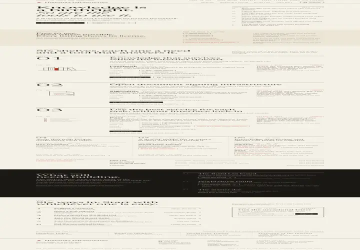
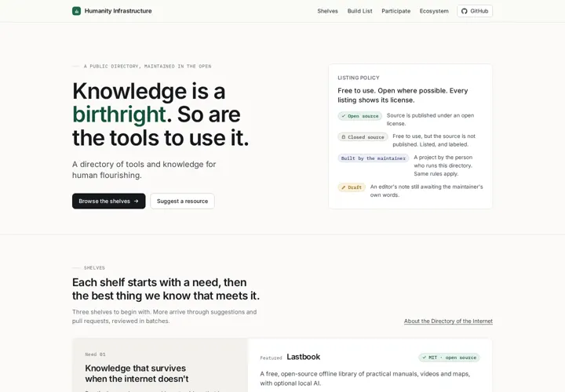
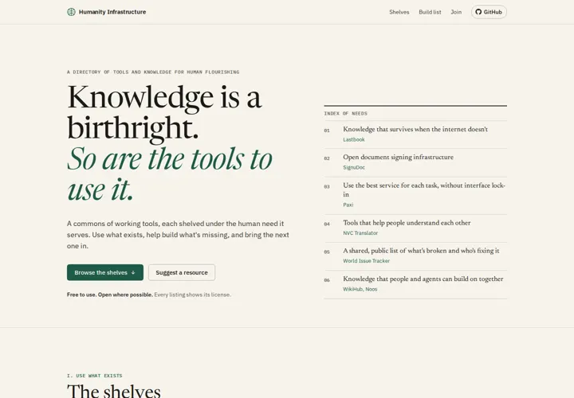
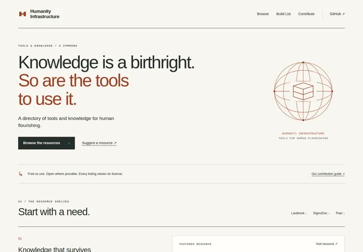
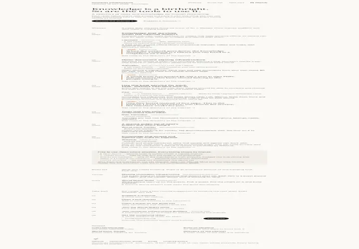
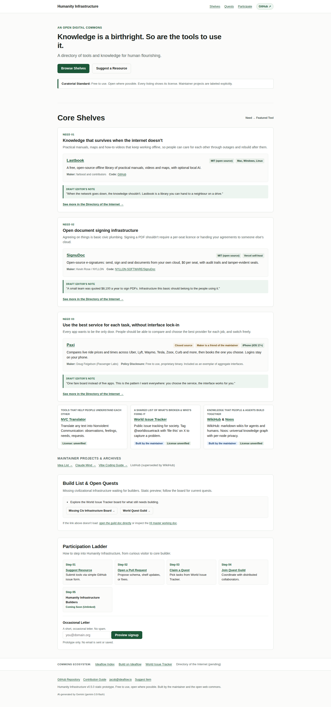
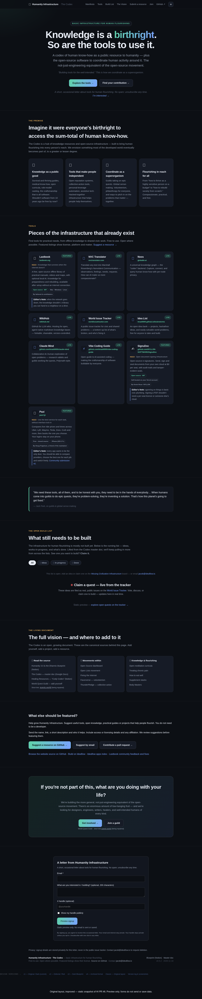

Humanity Infrastructure: design prototypes
Unlisted design review · Nine static prototypes, not the live site. Forms are demonstrations and do not send or save data. Visit the live site · Original layout

Fable 5.2 · Whole Earth Catalog
Paper and ink, a contents list of needs, dense spec listings, margin editor's notes, one vermilion accent.
Open
Fable 5.1 · Precise product
Linear/Stripe-like hierarchy, Inter + Plex Mono, civic green, listing-policy legend in the hero, split need/item cards.
Open
Opus · Commons catalog
Index of needs beside the hero; use / build / join structure; Newsreader + Plex, one green accent.
Open
Astra · Field catalog
Warm paper, rust accent, globe-lattice mark, "Start with a need", serif editor's notes.
Open
Fable 5.1 · benji.org-inspired
Quiet single column, hairline rows, Geist + Source Serif 4, ochre rule on editor's notes.
Open

